To expand my software development skills and experience in an innovative and exciting company or start-up through an intership or co-op program.
Relevant Courses : Social Computing, Information Visualization, Cognition and Culture, Massive Graph Analysis
Relevant Courses : Advanced Programming, Data Structures, Computer Graphics, AI, Design and Analysis of Algorithms, Programing Languages, Computer Architecture, Unix Systems Administration, Operating Systems, Microprocessor Interfacing, Circuit Analysis, Analog and Digital Electronics.
Talent for working with large existing code bases and development of complex software systems
Ability to create, manage and enhance interactive and secure web applications.
Proven ability to lead and manage a wide variety of design and development projects in team and independent situations.
Developed an Android application capable of reporting potholes on the road, acts of vandalism (e.g. graffiti), illegal trash dumping and other problems that affect cities worldwide. People are able to install this application, take a picture of the item, add notes and other information. Then they can upload the data and view a map with all the items. [View Track All Page]
Worked with the Sunlight Foundation on the 50 States Project as a GSoC student. Google Summer of Code is a program in which Google sponsors students to work full-time on Free and Open Source projects during the summer. The 50 States Project wants to make data available from all of the U.S. states legislatures through a single easy to use API. I worked on the development of several scrapers for some states including Hawaii, Colorado and Oregon. [View GSoC Page] [View the Sunlight Foundation Page]
Worked on enhancing and solving issues related to the installer of a Linux distribution developed by IBM. Some of the enhancements include the ability to create live USBs, CDs and virtual machine images. Worked with low-level Linux components such as the initrd/initramfs. [View LTC Page] [View the manager's final evaluation]
The University of Puerto Rico Mayagüez (UPRM) is developing a high performance, documented, and cross-platform GPU library for hyper-spectral image processing. This library takes advantage of GPUs and the CUDA framework by NVIDIA to drastically improve execution times of some hyper-spectral image processing algorithms. A key challenge in the development of the library is portability. I worked on the development of the build infrastructure and testing infrastructure. Additionally, I was involved on the creation of its coding guidelines. Conference Paper: Gabriel J. Pérez-Irizarry, Francisco De-La-Cruz, Miguel Velez-Reyes, Nayda Santiago-Santiago, "Developing a portable GPU library for hyperspectral image processing", appeared on the SPIE Defense, Security and Sensing conference, Baltimore, March 2012. [View Project Page]
Worked on the development of a serious 3D game-based learning platform in Java using JMonkeyEngine. The project aims to develop a factory simulation game that will help teach Industrial Engineering concepts. My main responsabilities where the integration of the TWL toolkit library, the implementation of the game grid, the refactoring of some third-party dependency and the design of some components. [View Project Page]
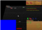 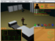Collaborated on improving a set of contributed libraries of the VXL project so that they can be promoted to the core layer of the project. VXL is an open source computer vision library. My work focused on promoting the VPGL module to core via automatic coding standard compliance checks with KWStyle. Additionally, I was involved in the manual coding guideline verification process. I participated in poster sessions and oral presentations for this project. The work was coordinated by Professor Miguel Figueroa-Villanueva. [View Project Page]
Under the supervision of Prof. Marko Schütz, I contributed to start implementing a software metrics system for NetBSD. This system combines several existing FOSS software metrics systems. My work consisted of the integration of software metrics tools such as cxref and ncc into the NetBSD build process. This work was done as part of the undergraduate research class of the CS department.
[View Project Page]Reto 2.0 is a competition that is open to all college students and it is sponsored by IBM, HP and Microsoft. The idea is to motivate college students to build rich web 2.0 applications. My team built http://enterar.me which roughly translates to: learn. The goal of the site is to combine the strengths of social media and traditional media into a single view. The web site does this by pulling data from Twitter, Facebook and the El Nuevo Día's API. [View News Paper Clipping] [View Enterar.me]
Students for Free Culture (SFC) is a diverse, non-partisan group of students and young people who are working to get their peers involved in the free culture movement. SFC chapters exist at over 40 colleges and universities around the world. SFC has collaborated with Creative Commons, the Electronic Frontier Foundation, Public Knowledge, Downhill Battle, and other free software and media reform groups. I co-founded our local chapter and I have help lead dozens of initiatives at our University including: Ubuntu Install Fests, Open Source Game Nights, Free CD Giveaways and a Petition for Free/Open Books. One of our most recent projects, colegiodemocrati.co, was featured in one of Puerto Rico's most popular newspapers, Primera Hora.[View freeculture.org] [View our local chapter's website]
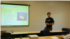 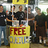Co-founded the Multimedia Productions Group. Served as Secretary and worked on the creation of 3D cutscenes for the Ruminix video game project. Also, I prepared various tutorials on how to use Blender for 3D modelling and animation. [View GPM's website]
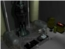 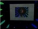 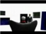The Boardcaster is an electronic chess board with an integrated chess engine. The board records chess games and broadcasts them live on the Internet through WiFi. Our system also has the unique feature of illuminating valid moves for player when a piece is raised with lights located throughout each square on the board. I worked on building the LED display system, including hardware and software, and on the WiFi communication. Also I contributed with the PCB verification and development. [View Class Page][View Project Page][View Final Report]
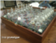 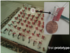 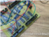Our goal was to use the Arducopter platform, a quadcopter based on Arduino, to create an automatic power-line surveying tool. My main contribution to the project was to get over-the-air serial communication working correctly and reliably between the Arducopter and the ArduRC controller. Additionally, I was involved in the air-worthiness tests performed on the aircraft and developed a GUI application to process the data acquired during missions for use with Google Earth. [View Class Page][View Final Report]
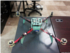 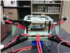Gabriel J. Pérez Irizarry — gabrieljoel@gmail.com — (787) 529-1050
{kind=link}
{kind=link}
{kind=link}
{kind=link}
{kind=link}
{kind=link}
{kind=link}
{kind=link}
{kind=link}
{kind=link}
{kind=link}
{kind=link}
{kind=link}
{kind=link}